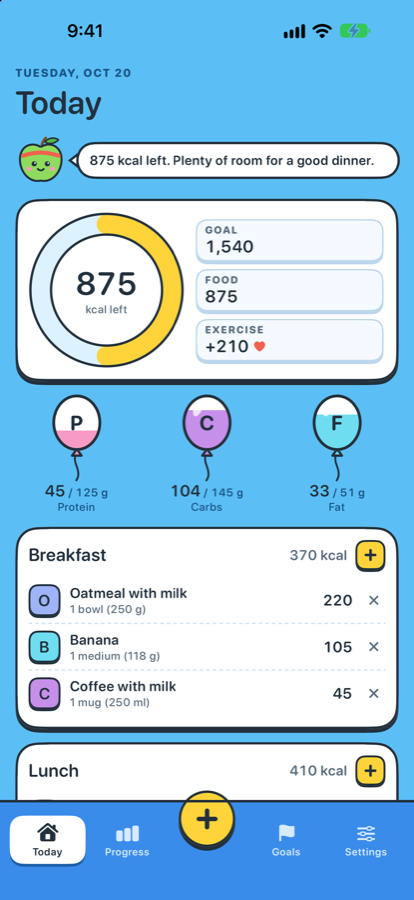
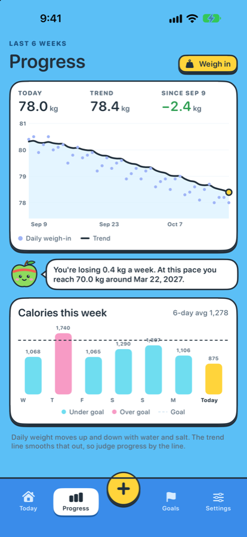
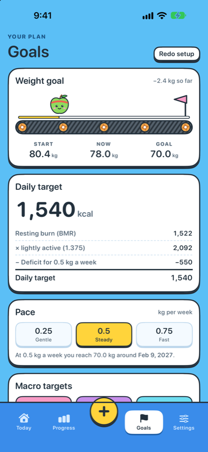

Snap meals. Track calories. Reach your goal.
Pip Calorie Counter is a friendly calorie counter for iPhone. Pip, a cheerful green apple, keeps you company while you log meals and work toward your goal weight.



Log food in seconds
- Photo: Pip recognizes common foods right on your iPhone.
- Barcode scanning with nutrition from Open Food Facts.
- Search about 80 everyday foods, from oatmeal to ramen to kabsa.
- Quick add calories from a package label.
A plan that fits you
A daily target from your age, height, weight and activity, with safe minimums built in. Works with Apple Health. Metric, US and UK units. English, 简体中文, 日本語, العربية and فارسی.
Private by design
No account, no ads, no tracking. Your data stays on your iPhone.